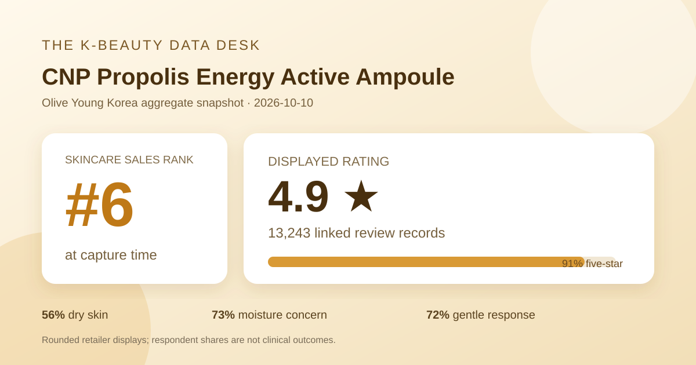
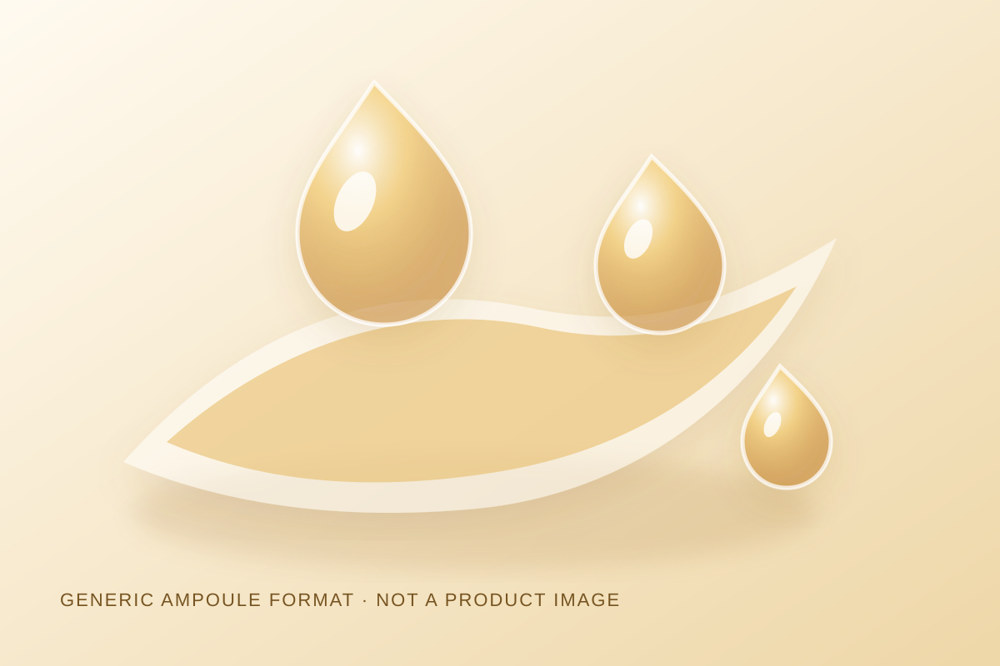

Data captured October 10, 2026. This is an independent analysis of retailer-displayed product information and anonymous aggregate review signals. I did not test the product, and no individual review, reviewer name, product photograph, or user photograph is copied, translated, or paraphrased.

The short version: CNP Propolis Energy Active Ampoule appeared at number 6 in Olive Young Korea's live skincare sales ranking. The product header and detailed review view both displayed 4.9 out of 5 from 13,243 review records. Five-star ratings accounted for 91% of the shown distribution. Dry skin, moisture concern, and gentle were the leading responses in the three shopper polls.
A 4.9 average paired with 91% five-star ratings is a strongly favorable storefront signal. A five-figure review base also makes the rounded average less sensitive to a small number of new ratings than it would be on a new listing. The agreement between the header and review detail is useful because it reduces the chance of accidentally combining figures from different product options or stale interface states.
Review volume does not remove selection bias. The retailer does not show how many purchasers chose not to review, how review prompts were delivered, whether incentives shaped participation, how long each respondent used the ampoule, or whether every record relates to the currently promoted multi-unit offer. Ratings also compress different priorities—finish, packaging, price, scent, routine fit, and long-term use—into one score. The justified conclusion is that the captured reviewer pool rated the listing favorably, not that every buyer will have the same experience.
Zero-percent labels do not prove that no low rating exists. Whole-number display can round a small share to zero. The article reports the storefront percentages exactly and does not reverse-engineer invented counts from them.
Dry skin was the largest displayed response at 56%, followed by combination skin at 41% and oily skin at 4%. The rounded total is 101%, a reminder that the interface shows whole-number percentages rather than raw respondent counts. The captured pool leaned dry, but combination respondents still formed a substantial share; oily respondents were much less represented.
These percentages describe who selected each response, not how well the ampoule performed for each group. The poll denominator was not displayed and may differ from the 13,243 rating count because not every reviewer necessarily answers every question. Without subgroup outcomes, the shares cannot establish that the product is better for dry skin or inappropriate for oily skin.
Moisture was the leading concern response at 73%, followed by soothing at 23% and wrinkle/brightening at 4%. This describes the concerns associated with respondents' feedback; it does not directly measure water content, barrier function, redness, wrinkles, pigmentation, or brightness. Merchandising and buyer expectations can also influence which concern label people select.
The irritation panel showed 72% gentle, 27% ordinary, and 1% felt irritation. That is a favorable perception pattern in the captured pool, but it is not a patch test, safety trial, or sensitive-skin guarantee. Tolerance can depend on the full formula, allergies, quantity, frequency, concurrent products, recent procedures, barrier condition, and individual history.

The listing identifies the item as an ampoule, which supports only a category-level description: it is sold as a leave-on concentrated skincare format rather than as a cleanser, pad, or cream. I did not dispense, spread, smell, layer, or wear it. I therefore cannot responsibly describe the actual texture as watery, viscous, sticky, fast-absorbing, fragrance-free, makeup-friendly, or suitable for a particular season.
The local illustration uses translucent drops and warm amber tones to communicate a generic ampoule concept without copying retailer photography, packaging, campaign art, or customer images. Those colors and shapes are design choices, not observations. The real formula may look and behave differently.
The retailer's automated recent-review summary labeled 94% of its summarized subset as positive. Its displayed categories broadly concerned moisture and luminous-looking finish, makeup adherence, and mild-feeling use. This article uses only those anonymous, retailer-generated aggregate themes. It does not copy, translate, or paraphrase an individual shopper's statement.
The 94% figure belongs to a recent summarized subset, not necessarily all 13,243 records. Automated summaries can emphasize repeated language, miss nuance, and inherit bias from the records selected for processing. Terms related to glow, moisture, or makeup fit remain subjective perceptions; they are not instrument readings or controlled outcomes. Likewise, a mild-feeling theme cannot establish allergy status, non-comedogenicity, or tolerance for a particular person.
“Propolis” and “energy” appear in the retailer-displayed name. The title alone does not establish ingredient concentration, source, extraction, purity, formulation, delivery, or a clinical effect. This analysis does not infer any amount from the name. Anyone comparing formulas should consult the current authorized ingredient label and market-specific product information for the exact item being purchased.
People with known bee-product or related allergies should not use retail ratings as a substitute for label review and qualified advice. The displayed averages do not reveal the complete ingredient list, individual allergy history, or controlled safety testing. A cosmetic name and anonymous feedback also do not prove treatment of inflammation, pigmentation, acne, barrier disorders, or another medical condition.
The captured heading described two 30 ml ampoule units plus a named 15 ml addition. The page showed a ₩52,000 reference price and ₩26,400 promotional price. Gifts, coupons, stock, membership benefits, seller terms, and checkout price can change. These figures are a dated Korea-store snapshot, not a permanent value claim or a quote for another market.
Rank six means the listing occupied the sixth slot in the selected skincare sales list at capture time. It does not mean sixth best by effectiveness, safety, formula quality, review volume, or value. Bundle size, discount depth, campaign placement, availability, season, and short-term demand can all affect sales rank.
The captured header and review detail both displayed 4.9 out of 5 from 13,243 records. The star panel showed 91% at five stars. That is favorable retail feedback, not proof of clinical effectiveness.
Dry skin led at 56%, followed by combination skin at 41% and oily skin at 4%. Those are audience shares, not recommendations.
No. It is a retailer perception poll with an unspecified denominator and uncontrolled use conditions. Personal tolerance can differ, and the complete current label matters.
No. The name does not establish amount, source, extraction, delivery, absorption, or therapeutic effect. This article does not estimate those details.
No. It is a local, brand-neutral graphic for a generic ampoule concept and makes no claim about the real product's appearance or behavior.
Source: Olive Young Korea product listing for the CNP Propolis Energy Active Ampoule promotional set, accessed October 10, 2026. The source is a dynamic retail page; rank, price, availability, gifts, counts, percentages, and interface details can change after capture.
This independent article reports displayed aggregate information with explicit limits. It is not sponsored, is not medical advice, and does not replace the current product label or qualified care.
← All K-Beauty Data Desk reviews · Best-seller rankings · Skin-poll representation · About & methodology